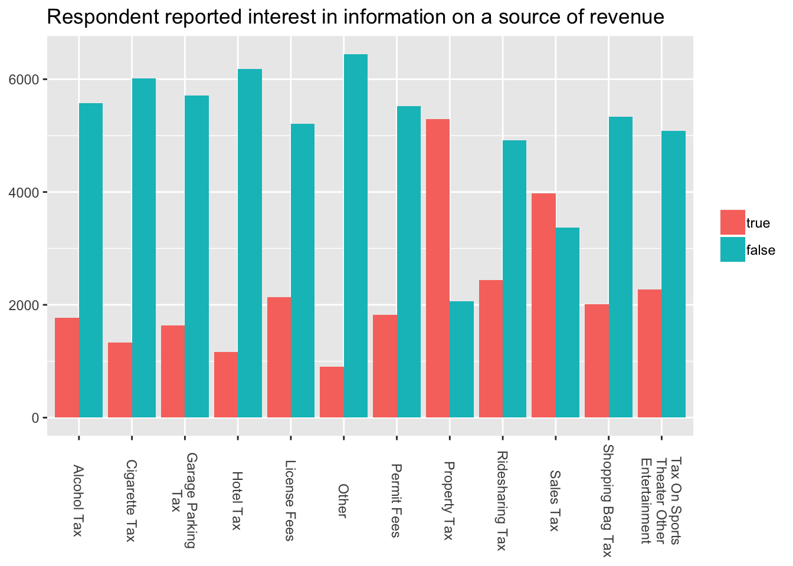
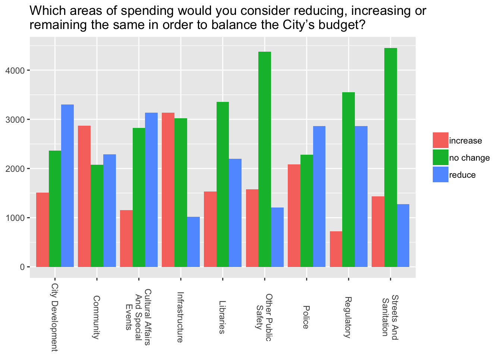

The budget survey collected data on public interest in receiving more information about revenue and expenses.

The survey also asked questions on which revenue changes or spending changes could be made to balance the city’s budget.

budget <- read.socrata("https://data.cityofchicago.org/api/views/drbg-ny73/rows.csv?accessType=DOWNLOAD", "ykQDb7IDvb4jrHDEx6hk7f8uF")
gbudget <- gather(budget, cat, value, -c(date, zip_code, counter_column)) %>%
mutate(cat=gsub("(?<=assignment)_","-",cat, perl = TRUE)) %>%
mutate(cat=gsub("(?<=change)_","-",cat, perl = TRUE)) %>%
mutate(cat=gsub("(?<=interest)_","-",cat, perl = TRUE)) %>%
separate(cat, c("category", "type"), sep="-") %>%
select(-counter_column) %>% mutate(id=1:nrow(.))
gbudget$value <- gsub("Increase.*","increase",gbudget$value) %>%
gsub(".*Same","no change",.) %>% gsub("Reduce.*","reduce",.) %>%
gsub("No Opinion","no opinion",.) %>% tolower()
gbudget$value[gbudget$value==""] <- NA
gbudget$value[is.na(gbudget$value)] <- "no answer"
gb <- filter(gbudget, category!="X_1000_assignment")
gb_sum <- summarize(group_by(gb, category, type, value), count=n()) %>%
filter(value!="no answer")
gb_sum$category <- gsub("_interest","_int",gb_sum$category) %>%
gsub("_change","_cha", .) %>% tolower()
#generate all four plots above at once.
for (gbcat in gb_sum$category) {
plot <- filter(gb_sum, category==gbcat)
if (grepl("_int$",gbcat)) {
plot$value <- factor(plot$value, levels=c("true","false"))
}else if (grepl("revenue",gbcat)){
plot$value <- factor(plot$value, levels=c("increase","no change", "no opinion"))
}else if (grepl("spending",gbcat)){
plot$value <- factor(plot$value, levels=c("increase","no change", "reduce"))
}
plot <- ggplot(plot, aes(str_wrap(str_to_title(gsub("_"," ",type)),
width=16), count, fill=value)) +
geom_col(position="dodge") +
#scale_x_discrete(labels=function(x){sub("\\s", "\n", x)}) +
labs(title=element_blank()) +
theme(axis.title.x=element_blank(),
axis.title.y=element_blank(),
legend.title=element_blank(),
axis.text.x = element_text(angle=270, hjust=, vjust=0.5))
assign(gbcat, plot)
}Finally, the survey asked how each respondent would hypothetically allocate $1,000 of the city’s budget.